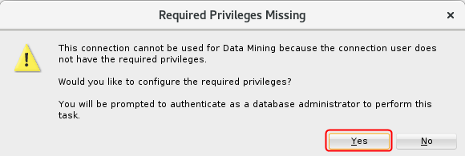
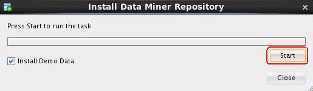

Install
the Data Miner Repository
Install
the Data Miner Repository Before You Begin
Before You Begin
This 15-minute tutorial shows you how to install the Data Miner repository.
Background
Oracle Data Miner is a graphical user interface (GUI) and set of tools included as as free extension of Oracle SQL Developer. The Data Miner repository includes data you can use to illustrate the functionality of Data Miner.
- The Data Miner Repository installation routine automatically starts the first time that you activate a SQL Developer connection from the Data Miner tab.
- Once the Data Miner Repository has been installed in the database, other data miner users may be granted the required privileges to the repository by an automated process that is similar to the installation routine examined here.
What Do You Need?
- Oracle Database 19c Enterprise Edition
- Oracle SQL Developer version 19.x
- A Data Miner user account and SQL Developer connection
 Add a
Data Miner Connection
Add a
Data Miner Connection
- From the SQL Developer menu, select Tools > Data Miner > Make Visible.
- In the Data Miner tab, click the Add Connection tool (green "+" icon).
- Select PDB1-DMUSER from the Connection list and then click OK.
 Install the Data Miner Repository
Install the Data Miner Repository
- Double-click on PDB1-DMUSER.
- Click Yes in the Required Privileges Missing window.

Description of the illustration required-privileges-missing.png - Enter the password for the SYS account and click OK.
- Click OK on the Repository Installation Settings window.
- Click Start to grant permissions to the Data Miner
account and install the demo data.

Description of the illustration install-repository.jpg - Click Yes on the Installing Demo Data window.
Next Tutorial
In the next tutorial, you'll create a Data Miner workflow.